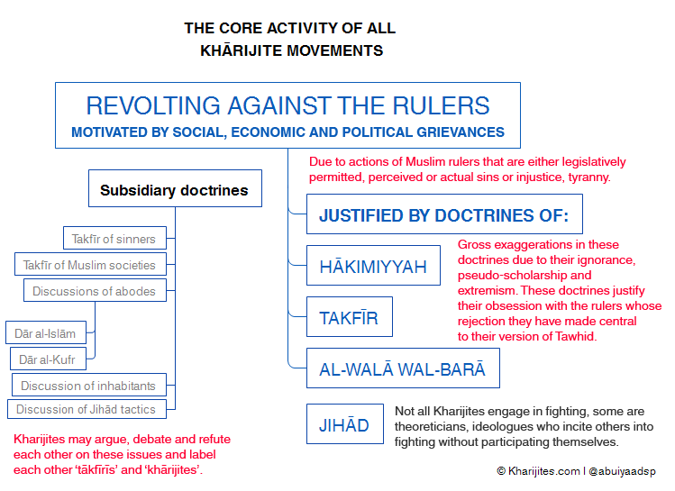

Analysis
Analysis
Refutation of the Black-Propaganda Claims of the Khārijites That They Are Not KhārijitesPosted by Abu Iyaad on Monday, October 17, 2016 and filed under Analysis |
| Mail To Friend | Printer Friendly |
The Khārijite Extremists have a number of black-propaganda techniques involving deception, deflection and diversion in trying to remove the label of Khārijism from being rightfully applied to their views, activities and persons. These methods deceive the ignorant amongst the Muslims as well as numerous Western orientalists and academics, some of whom the Khārijites have worn and used like glove-puppets with their well-vaselined fists. These orientalists and academics then serve - unknowingly or knowingly - as propaganda outlets for these Khārijites.
Their claims are:
- We do not make takfīr on account of sin, so how can we be Khārijites?! In this regard we see statements of protest from Abū Qatādah, Abū Muḥammad al-Maqdisī and a variety of other Khārijite hounds.
- We do not make takfīr of entire societies, this is a lie against us. So how can we be Khārijites?! Again the writings of the Khārijites are replete with this rejection and every one of the following has statements to this effect: Usāmah bin Lādin, Ayman al-Zawāhirī, Abū Muṣʿab al-Ṣūrī, Abū Muḥammad al-Maqdisī, Abū Qatādah, ʿUmar ʿAbd al-Raḥmān, Yūsuf al-ʿUyayrī, Abū Baṣīr Muṣtafā Ḥalīmah al-Ṭurṭūsī and others.
The answer to their false claims is plain and simple and is a well-known matter of record in the books of history, biography and creed.
It is not a condition for being a vile Khārijite that you make takfīr of sinful Muslims who may drink, gamble, fornicate or steal. Nor is it a condition for being a vile Khārijite that you make takfīr of entire societies of Muslims because they live within societies whose rulers do not judge entirely by the Sharīʿah or are sinful, oppressive and tyrannical.
As for takfīr of the sinners, takfīr of entire societies and rulings that follow on from these views within Khārijite jurisprudence, that is simply a level of extremism in addition to the central element. These additional ideas may or may not develop depending on individuals and circumstances. Historically, splits occurred among the Khārijites (see here). The Najadāt did not make takfīr by way of major sin. The Azāriqah deemed it permissible to kill women, children, the elderly and the disabled, considering them all to be disbelievers along with the rulers. Others amongst them extended the ruling of disbelief to the subjects merely on account of the disbelief of the ruler such as the Bayhasites and they consider the lands inhabited by them as lands of disbelief and war.

The central core activity is revolting against the rulers. This is justified through grounds of not ruling by Allāh’s law, the rulers are declared disbelievers. This in turn demands jihād to remove their political authority. Loyalty and disavowel centred around this creed (ḥākimiyyah) and the judgements of takfīr upon the rulers must be maintained to ‘actualise Tawḥīd’. This central core will have implications in terms of how to the Khārijites deal with government institutions (army, police, employed imāms) as well as Muslim societies in general. It is here where the subsidiary differences lie between the Khārijites and they argue, debate and refute each other, some of them accusing others of extremism, making generalised takfīr of Muslim societies, barbarity and the likes. The ‘moderates’ freeing themselves from the extremists. Some will accuse others of being Khārijites and others will free themselves from this label. The reality is that they are all Khārijites.
As for the proof of history:
The Khārijite movement present in the era of the Prophet (ṣallāllāhu ʿalayhi wasallam) challenged his authority and cast doubt on his integrity in the matter of the distribution of wealth. They essentially accused him of social and economic injustice and claimed that he had not acted in accordance with Allāh’s law (which demands justice in all dealings).
The core issue with the Khārijite extremists and terrorists who came out against ʿUthmān (raḍiyallāhu ʿanhu) was that they accused him of social injustice and not judging by the justice that Allāh had commanded. On this basis they revolted against him, eventually assassinating him.
Likewise with ʿAlī (raḍiyallāhu ʿanhu), they accused him (due to their ignorance) of granting men the right of judgement which belongs only to Allāh, and thus, he became a mushrik (polytheist) for doing so and then revolted against him, splitting from the main body and creating their own alleged Islāmic state. These were the first Khārijites, the Muḥakkimah, as they were called. Other groups appeared later and added doctrines varying in extremism as they faced new circumstances in their war against Muslims.
So the central, unifying issue is takfīr of the rulers on account of perceived injustice translated into the claim of not judging by Allāh's law. This is founded on their extremist understanding of ḥākimiyyah. They revolt against them (khurūj) and consider this to be jihād and enjoining good and prohibiting evil. Thereafter, they make this the basis of loyalty and disavowal.
There is no difference in this between Usāmah bin Lādin, Ayman al-Zawāhirī (al-Qaeda), Abū Muḥammad al-Maqdisī, Abū Qatādah, Abu Baṣīr Muṣtafā Ḥalīmah, Abū Muṣʿab al-Ṣūrī or Abū Bakr al-Baghdādī and Abū Muḥammad al-ʿAdnānī (ISIS) or the Juhaymānites and so on. They are all Khārijites, every last one of them. That some of them may refute the ‘extremism in takfīr of others’ and barbarity and butchery of others does not exclude them from being Khārijites since these disputes took place between the earliest Khārijites (see this article for details).
As for biography:
ʿImrān bin Ḥittān (84H) was from Ahl al-Sunnah in the era of the Tābiʿīn. He married a Khārijite woman whom he thought he could rectify but instead she turned him into a Khārijite. He held the view of revolt against the rulers, though he himself did not fight. Ibn Ḥajar said of him:
Likewise al-Ḥasan bin Ṣaliḥ bin Ḥayy (169H), he merely held the view of revolting against the rulers and would also not pray Jumuʿah in the mosques. He was shunned, declared an innovator, spoken against with harsh words and treated as a Khārijite by the Salaf. Al-Ẓahabī said:The well-known Tābiʿī, he was from the heads of the Khārijites from the Qaʿadites, and they are the ones who beautify revolt against the Muslim to others but do not engage in fighting themselves. [Al-Iṣābah Fī Tamyīz al-Sahābah (5/302)]
Al-Ḥasan used to view the permissibility of revolting against the rulers of his time for their oppression and tyranny. However, he never fought himself at all. And he did not hold (it permissible) to pray behind the sinner. [Al-Siyar (7/361)]
As for creed:
The Salafī Imām, ʿAbdullāh bin al-Mubārak (179H) said:
Whoever spoke of [the obligation of] praying behind every righteous or sinful [leader], made jihād behind every leader, did not view [the permissibility] of revolting against the leader with the sword and supplicated for their rectification has departed from the statement of the Khārijites, from its beginning to its end. [Al-Barbahārī in Sharḥ al-Sunnah ]
We see here that the issue revolves around rulers and does not have to involve Muslim societies or sinful Muslims and making takfīr of them.
Imām al-Barbahārī (329H) said:
Whoever revolted against a ruler from the rulers of the Muslims is a Khārijite. He has split the Muslims, opposed the narrations and died a death of jāhiliyyah.[Sharḥ al-Sunnah]
And Shaykh al-Fawzān commented on this statement in his explanation of Sharḥ al-Sunnah:
Whoever left off obeying the ruler and split the [Muslims] united in obedience with the the proof that the ruler has sins and oppositions, as was done by the Khārijites, then he has the ruling of being a Khārijite.[Refer to Ittiḥāf al-Qāriʾ]
The Shaykh also said in another place:
The Khārijites and the Muʿtazilah who revolt against the profligate rulers. [Sharḥ ʿAqīdat al-Imām al-Mujaddid Muḥammad bin ʿAbd al-Wahhāb (Dār al-Minhāj, 1426H) p. 128]
Imām al-Ājurrī (360H) said:
It is not permissible for the one who sees the uprising of a Khārijite who has revolted against the leader, whether [the leader] is just or oppressive - so this person has revolted and gathered a group behind him, has pulled out his sword and has made lawful the killing of Muslims - it is not fitting for the one who sees this, that he becomes deceived by this person’s recitation of the Qurʾān, the length of his standing in prayer, nor his constant fasting, nor his good and excellent words in knowledge when it is clear to him that this person’s way and methodology is that of the Khārijites. [Al-Sharīʿah (p. 28)]
Shaykh al-ʿUthaymīn said:
Those who make takfīr [of the Muslim rulers], they are the inheritors of the Khārijites who revolted against ʿAlī bin Abī Ṭālib (raḍiyallāhu ʿanhu). [Cassette: Kashf al-Lithām ʿan Aḥmad Sallām]
Shaykh Ibn Bāz said:
This is the religion of the Khārijites, the religion of the Khārijites and the Muʿtazilah, it is revolting against the rulers and not hearing and obeying in matters that do not constitute disobedience. This is an error and was not commanded by the Messenger (ṣallallāhu ʿalayhi wasallam). [Cassette lecture: Ḥukm al-Ḥamalāt al-Iʿlāmiyyah ʿalā Bilād al-Ḥaramayn]
And Shaykh al-Albānī said:
The intent is that they instituted an evil way in Islām and turned revolt against the rulers of the Muslims into a religion through the passing of time and days despite the warning of the Prophet (ṣallallāhu ʿalayhi wasallam) against them in many traditions, from them is his saying (ṣallallāhu ʿalayhi wasallam), ‘The Khārijites are the dogs of Hellfire’ and despite them not seeing plain, open disbelief from them. Rather, they only saw what is less than it of oppression, profligacy and sin. Today history repeats itself as they say, for there has appeared a new outgrowth of Muslim youth who have not gained understanding in religion save a little. They hold that the rulers do not judge by what Allāh revealed except a little and they deem it [permissible] to revolt against them without seeking consultation with the people of knowledge, understanding and wisdom among them. Rather, their leaders incited brutal tribulations and spilled blood in Egypt, Syria, Algeria and prior to that in the tribulation of the Meccan Ḥaram. By doing that they opposed the authentic ḥadīth which the action of the Muslims has proceeded upon, bot the earlier predecessors and the latecomers, with the exception of the Khārijites. [Silsilah al-Ṣaḥīḥah 7/1240-1241]
From what has preceded the futile black propaganda techniques of contemporary Khārijites do not avail them because they cannot falsify the Prophetic traditions concerning them, they cannot falsify the books of history, they cannot falsify the books of biography and how the Salaf characterised and defined Khārijites of their time, they cannot falsify the books of creed that defined the central element of Khārijite ideology. For they are Khārijites, even if they hide behind slogans such as “Muwwaḥidūn”, “Followers of the Religion of Abraham” and even if they self-identify or are identified by Orientalists and academics as “Salafī-Jihādists”. For labels do not change the features and qualities, just as the label of “apple juice” on a bottle does not change the essential qualities of the intensely yellow urine that occupies it. The Khārijites and Western orientalists and academics are happy to deceive others through the use of mere labels whilst ignoring the actual physical realities.
Abu Iyāḍ
16 Muḥarram 1438 / 17 October 2016
Link to this article: Show: HTML Link • Full Link • Short Link


Follow us through RSS or email. Click the RSS icon to subscribe to our feed.


Add a Comment
You must be registered and logged in to comment.
| Takfīr (Excommunication) |
| Ḥākimiyyah (Lawgiving) |
| Khurūj (Revolution) |
| Walaʾ & Barāʾ (Loyalty and Disownment) |
| Jihād (War) |
| Imāmah & Khilāfah (Leadership & State) |
| Irhāb (Terrorism) & Plunder |